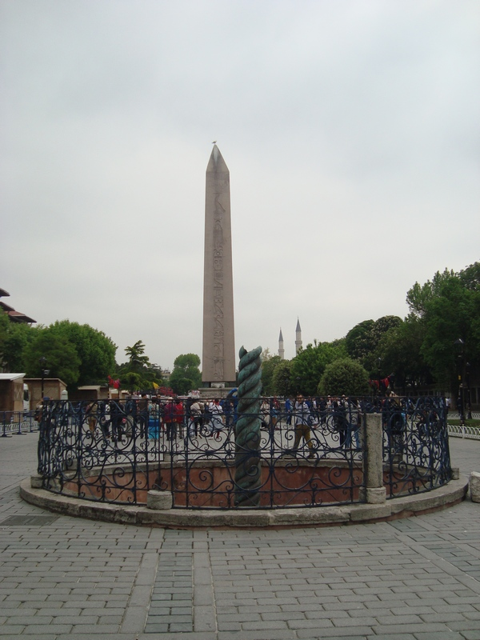
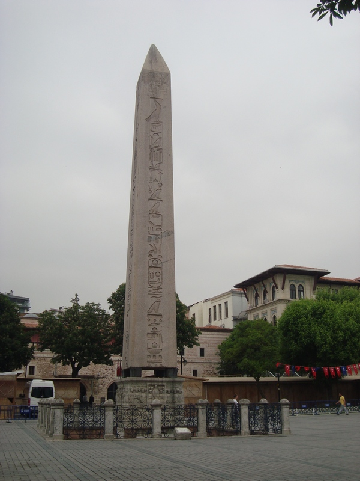
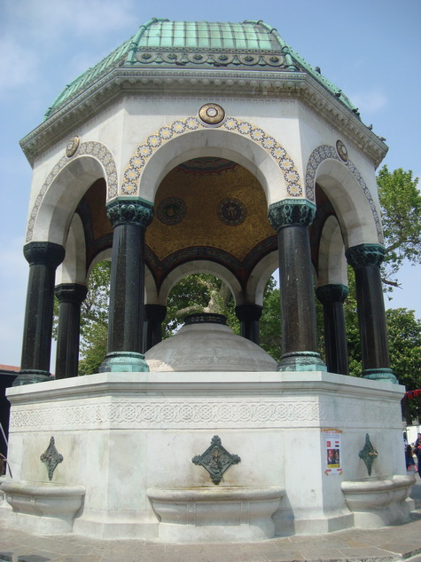
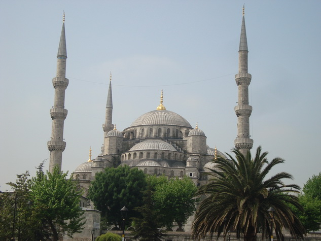
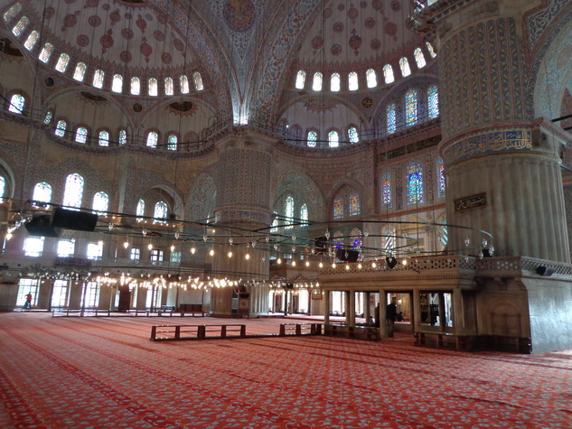
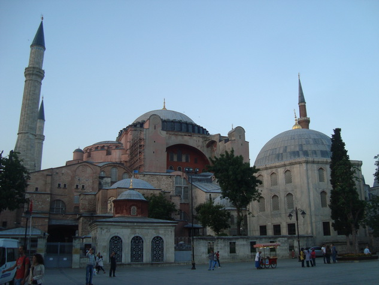
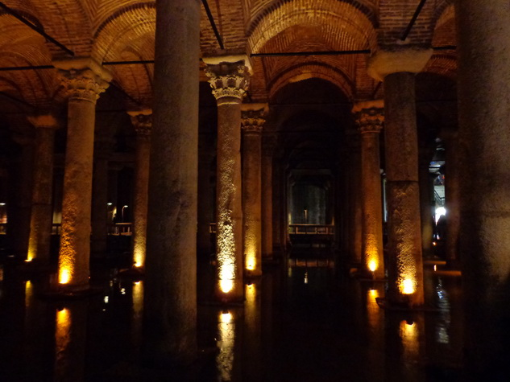
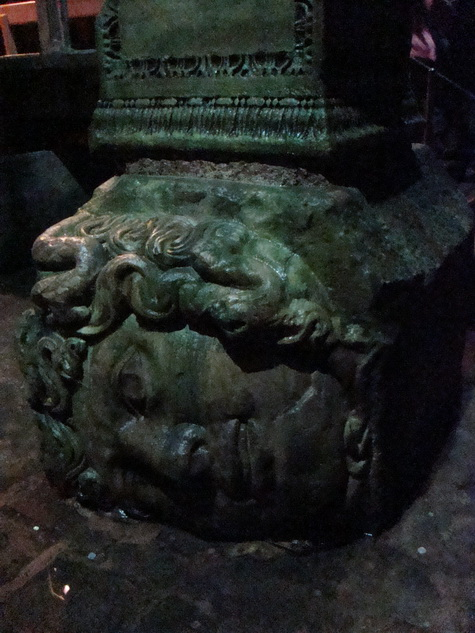

V dnešním příspěvku bych ráda zmínila několik míst, která jsem za těch pár dní v Istanbulu stačila navštívit. Vzhledem k tomu, že jsme byli ubytováni v turisticky vyhledávané čtvrti Sultanahmet, měli jsme téměř všechny významné istanbulské památky v dosahu pěší chůze. Právě zde se nacházelo srdce byzantské a osmanské říše, budovaly paláce, chrámy a další významné budovy. Ve středu této čtvrti leží byzantský hipodrom, kde se v minulosti odehrála řada politických a mocenských dramat. Za pozornost zde stojí Hadí sloup, který byl vztyčen již v roce 478 př.n.l. v Delfách - okolo roku 330 našeho letopočtu ho pak na toto místo přepravil císař Konstantin Veliký. Ze sloupu pravda nezbylo mnoho - přesto je fascinující vidět tak starou památku! Část jedné hadí hlavy, která se dochovala, je uložena v Istanbulském archeologickém muzeu.

Hadí sloup
Žulový Theodosiův obelisk, který se nachází opodál, už rovněž něco pamatuje - byl vytesán v Egyptě zhruba v roce 1450 před našim letopočtem. Do tehdejší Konstantinopole byl převezen v roce 390 našeho letopočtu císařem Theodosiem.

Theodosiův obelisk
Nakonec dojdete po hipodromu až ke kašně císaře Viléma, která byla darem německého císaře Turecku jako projev přátelství.

Kašna císaře Viléma
Přímo z hipodromu se dostanete k jedné z nejznámějších istanbulských mešit - Modré mešitě, která měla ve své době svou majestátností předčit nedaleký chrám Aya Sofya. Má více minaretů, než kterákoliv jiná mešita ve městě. Stejně jako většina ostatních mešit v Istanbulu, i tato je turistům volně přístupná. Pro ženy je zde k zapůjčení nějaké to roucho či šátek na zahalení.

Modrá mešita

Interiér
Od Modré mešity už je to jen coby kamenem k hlavní istanbulské ikoně - chrámu Aya Sofya, který nechal postavit císař Justinián na místě bývalé byzantské akropole a byl dokončen roku 537. Po dobytí Cařihradu v roce 1453 byl křesťanský chrám přebudován na mešitu. Dnes už svému původnímu účelu neslouží - v roce 1934 byla Aya Sofya prohlášena za muzeum.

Aya Sofya
Mojí osobní istanbulskou srdcovkou, kterou by bylo škoda nechat si ujít, je Vodní nádrž baziliky. Tato podivuhodná podúrovňová stavba, kterou nechal vybudovat císař Justinián v roce 532, je největší byzantskou cisternou v Istanbulu. Zdejší chladivé podzemní prostory oceníte zejména v parném letním počasí :-). Střechu nádrže podpírá 336 sloupů, uspořádaných ve 12 řadách. Vaší pozornosti by neměly uniknout zejména sloupy v severozápadním rohu, které jsou podepřené bloky ve tvaru hlav Medúz. A nezapomeňte si s sebou vzít nějaké pečivo od snídaně, ať můžete nakrmit rybičky v nádrži :-)!

Vodní nádrž baziliky

Medúza
I přes mou upřímnou snahu o stručnost se mi sem dnes asi nevejde úplně všechno, co bych chtěla zmínit, takže na další istanbulské památky a zajímavá místa se můžete těšit zase příště ;-).